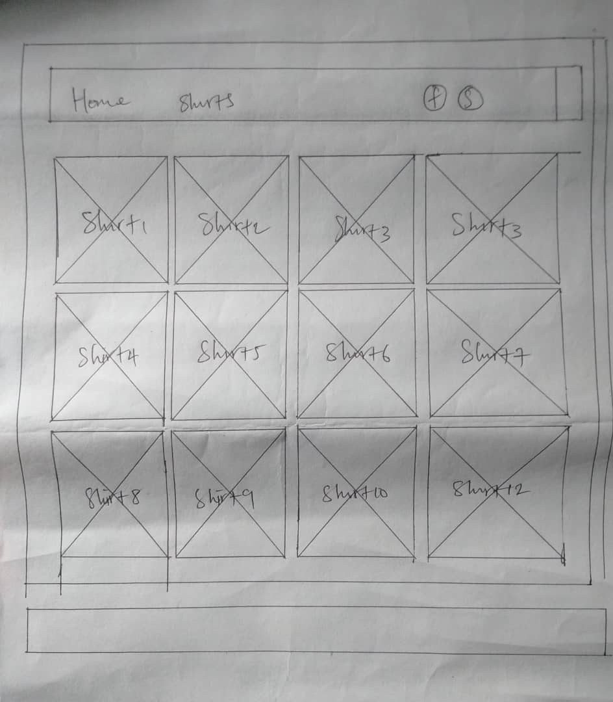

Site plan of Jimrex Clothing store
Purpose
The purpose of an Jimrex clothing store in Aba, Nigeria,
would be to leverage technology to showcase and sell the
unique and high-quality clothing produced in the region,
while also contributing to economic growth and cultural exchange.
- Reach and Accessibility: It expands the reach of locally produced
clothing to a global audience. For Aba, known for its vibrant
textile industry, an online store enables access to a wider
market beyond the local region, reaching customers worldwide.
- Showcasing Local Talent and Craftsmanship: Aba is renowned
for its skilled artisans and textile production. An online store can
showcase and promote the unique craftsmanship, designs, and cultural
heritage of the region to a broader audience.
- Economic Growth and Opportunities: By selling locally
made clothing online, the store can contribute to the economic growth
of the region by creating job opportunities, supporting local artisans,
and boosting the textile industry.
- Convenience for Customers: Online stores offer convenience
to customers, allowing them to browse and purchase products from
anywhere at any time, without the constraints of physical store
hours or location.
- Market Expansion and Brand Building: An online presence
helps in brand building and expanding market reach. It allows
the store to engage with a diverse customer base, receive feedback,
and adapt to evolving trends and preferences.
- Cultural Exchange and Global Recognition: It facilitates
cultural exchange by introducing traditional or locally inspired
designs to customers globally, fostering appreciation and
recognition for Aba's rich cultural heritage.
Audience
Jimrex clothing store in Aba serves as a convenient platform for
residents and customers worldwide to browse, purchase, and
access a wide variety of fashion items, including clothing,
footwear, and accessories. It aims to provide a seamless
shopping experience, offering a diverse range of trendy and
affordable clothing options for individuals of all ages and
preferences. Additionally, the store may also help promote
and support the local fashion industry in Aba by showcasing
and selling products made by local designers and manufacturers.
Overall, the purpose of such an online store is to meet the
fashion needs of its customers while contributing to the economic
growth of the region.
Typography
For heading: Times New Roman, Times, serif
for paragraph: Arial, Helvetica, sans-serif
Wireframe
shirts, trousers, suits agbada caps and shoes Wireframe
